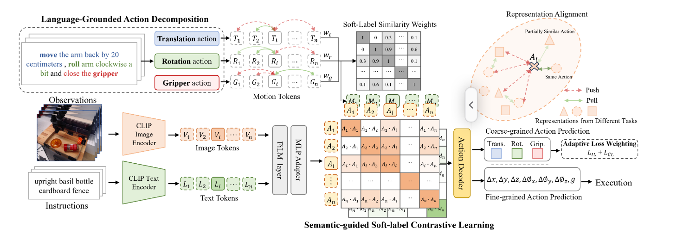

Language-Grounded Decoupled Action Representation for Robotic Manipulation
研究问题 连续机器人动作很难承载稳定、可解释的语义，也难以在任务间复用。
该工作以语言作为视觉理解与低层控制之间的语义桥梁，将连续动作解耦为平移、旋转与夹爪原语， 并通过语义引导的软标签对比学习，让相近动作在表征空间中保持可解释的结构。
方法
语言引导的动作解耦
训练目标
语义引导的软标签对比学习
结果
更强的跨任务动作泛化能力